Do you also want to know some information about the categories? Please go through this page and you will get a lot about the popular kinds of cats!
British Shorthair
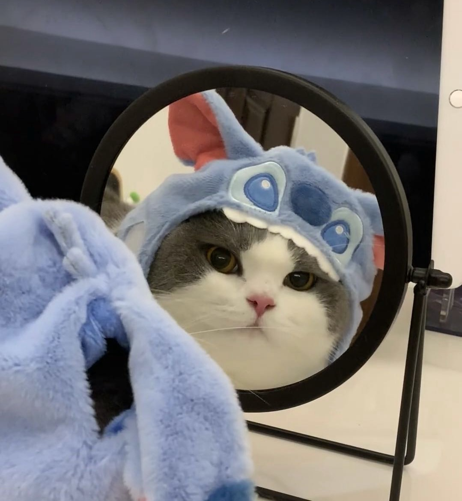Put your mouse here to show the information
click the button right to show the information
BRITISH SHORTHAIR
For the british shorthair, the classic version is the British blue and it is the most famous breed at all.
What is better is its good-natured appearance and calm temperament. It makes people don't care too much about the cat.
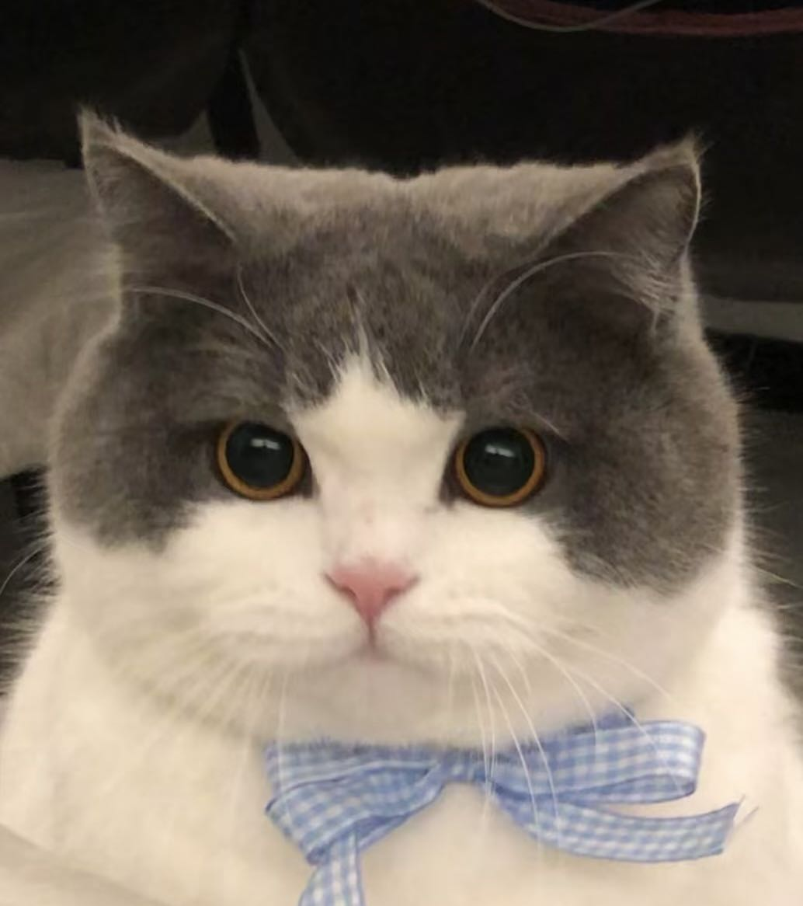Ragdoll
Put your mouse here to show the information
click the button right to show the information
RAGDOLL
Congratulations! You find the world's 1st cute cat lol
When you see a fat, has distinct colorpoint and blue eyes guy lying on the ground, that is definitely a ragdoll.
It doesn't like running, jumping or any other exercise, just lying on human's body is the greatest, without any aggression to people or other creature.
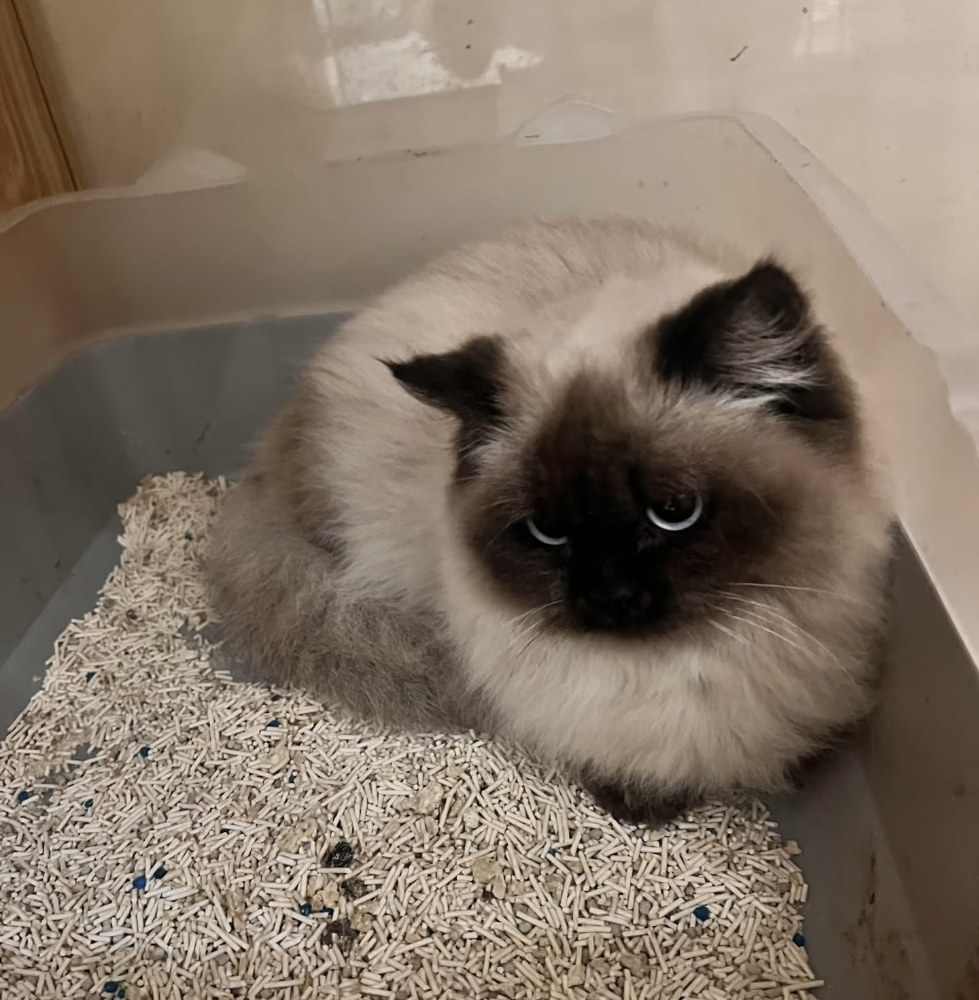Maine Coon
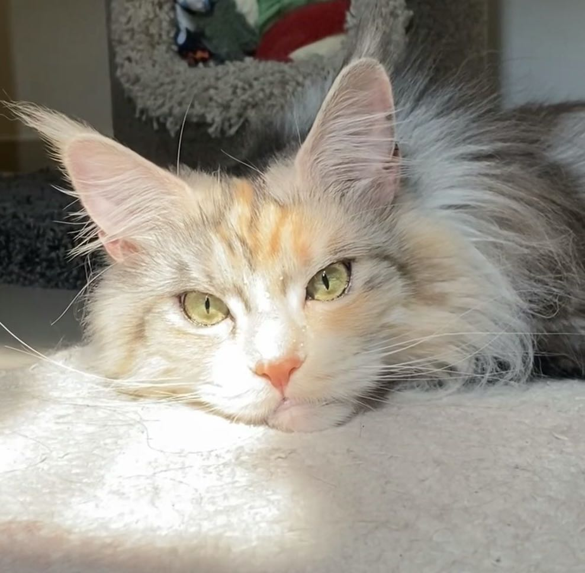Put your mouse here to show the information
click the button right to show the information
MAINE COON
Ouch! What a huge baby!
Maine is a large domesticated cat breed.
Don't care any about his strict face and huge body, he is a 'gentle giant' actually. And the reason made this cat having so many long fur and the volume is because the environment he lived was bad in original.
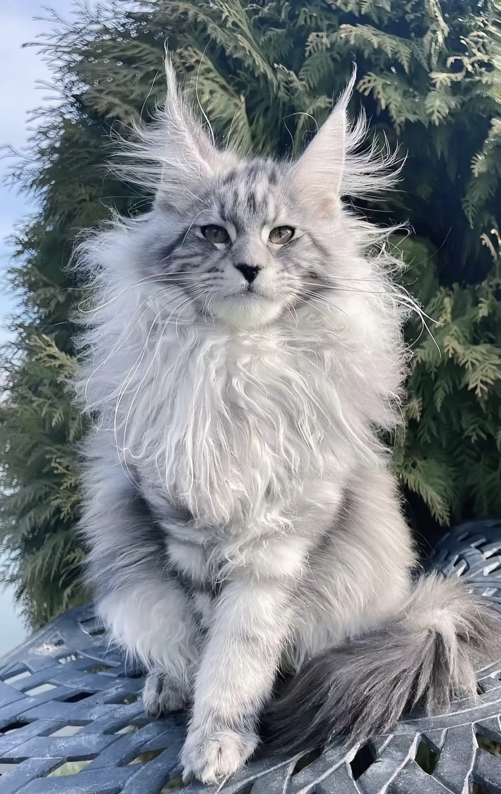Siamese
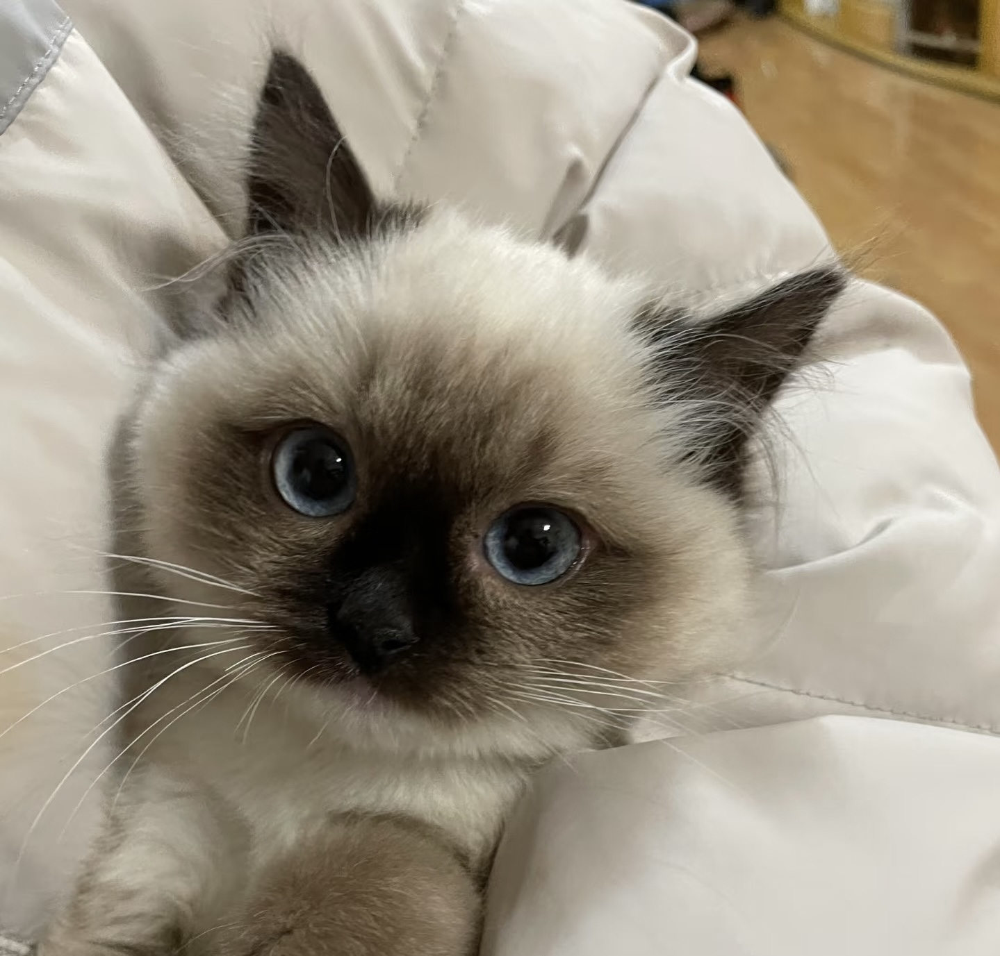Put your mouse here to show the information
click the button right to show the information
SIAMESE
When remind the siamese, we often imagine the modern, long-faced breed. It is the first breed recognized by the world in Asia.
Siamese cats have distinctive colourpoints which is the unique feature to recognize. And it is a result of their emperature-sensitive albinism.
For the modern type, the blue eyes, triangular head, long ears and so on are also their features.
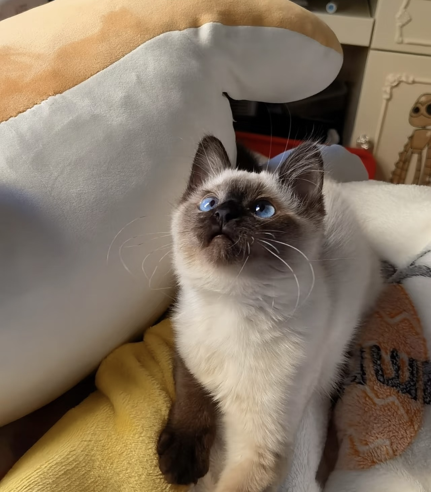Burmese Cat
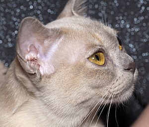Put your mouse here to show the information
click the button right to show the information
BURMESE CAT
For Burmese, the name, it was used to name the brown. but with the development, people became to call this type of cat 'burmese'.
At first, all the burmese were dark brown. But with the extensive outcrossing, more and more color appeared for people to choose.
It is a small or medium size breed, but it seems like a little bit heavy while holding them.
Their fur is very short, fine and glossy like silk, you'll feel comfortable when you touch them.
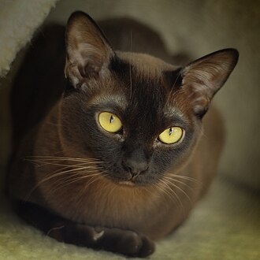Persian
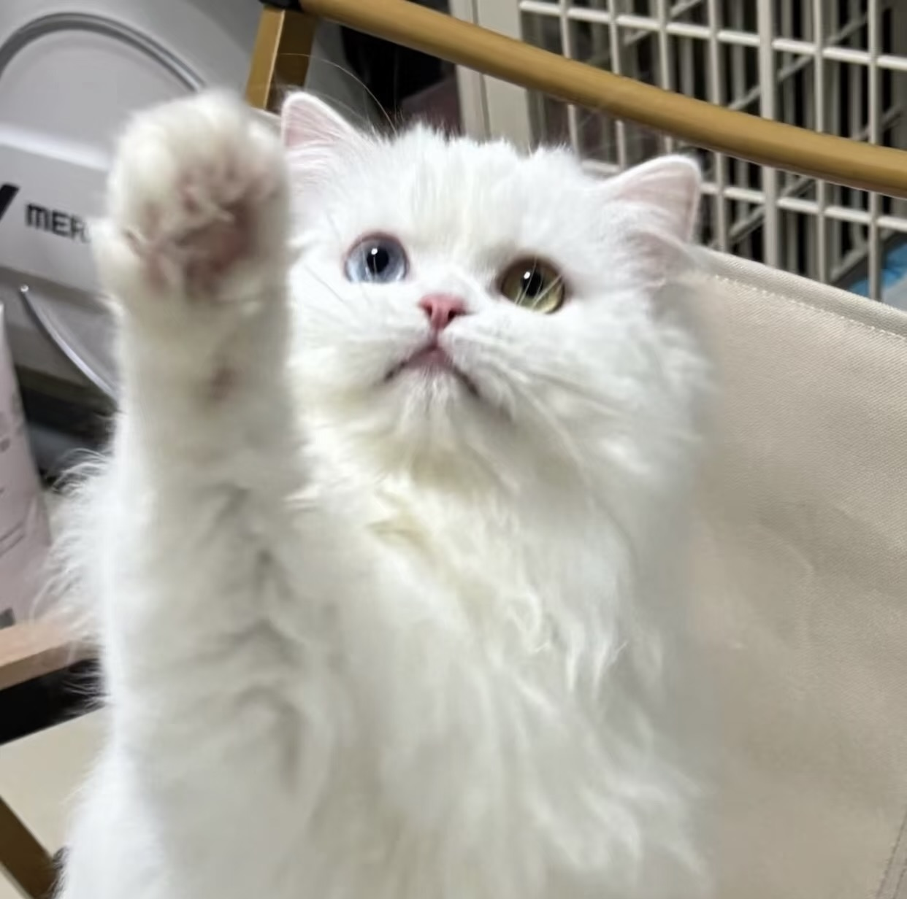Put your mouse here to show the information
click the button right to show the information
PERSIAN CAT
Persian cat, also known as persian longhair, the features are round faces and short muzzles.
However, these features are not performed in some kinds of persian. Such as the traditional Persian, doll-face Persian, or moon-face Persian, they keep their original features at all.
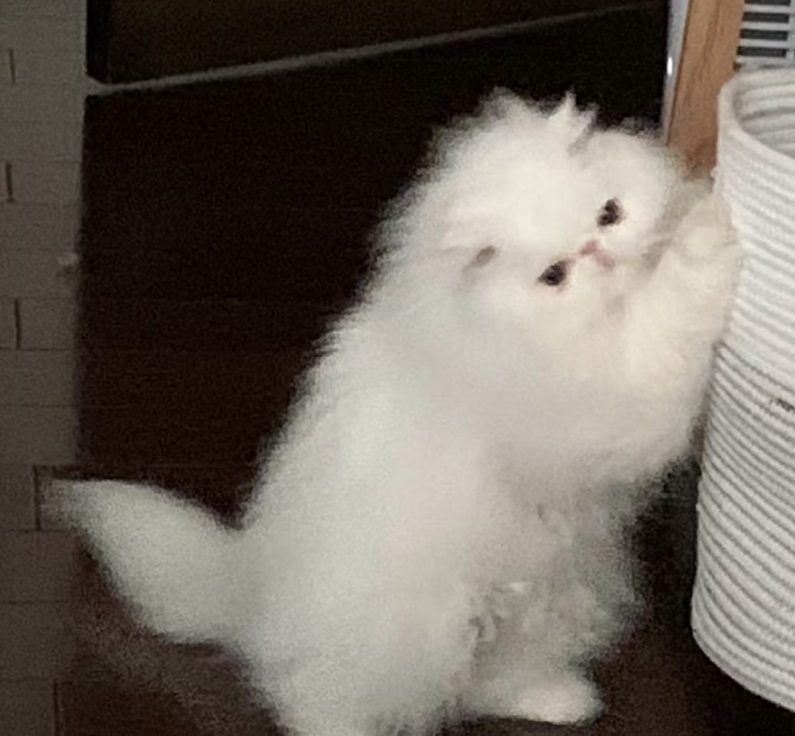